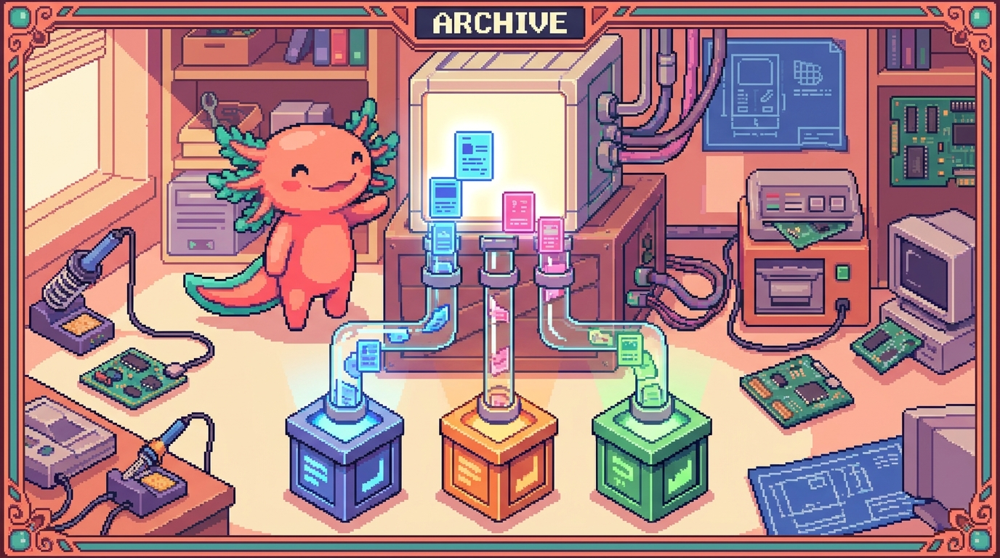

Capítulo 03 — Props
Un componente reutilizable tiene que poder mostrar datos distintos cada vez: la misma
HabitCardte sirve para "Leer", para "Ejercicio" o para "Meditar". Eso se consigue con las props, que son los datos que un componente recibe de quien lo usa. Es el segundo concepto más importante de React.

1. Qué son las props
🟦 ¿Qué significa? — Props (propiedades)
Las props (viene de properties) son los datos que un componente recibe de su "padre", es decir, del componente que lo usa, para personalizar lo que muestra. Piénsalas como los parámetros de una función, que ya conoces: el componente es la función y las props son sus argumentos. Se pasan como si fueran atributos de una etiqueta:
tsx <Saludo nombre="Edwar" /> <Saludo nombre="Ana" />Aquínombrees una prop, y cada vez le damos un valor distinto.
2. Recibir props en el componente
🟦 ¿Qué significa? — Recibir y usar props
El componente recibe las props como un objeto, que es su primer parámetro. Casi siempre las "desestructuramos", o sea, sacamos las que nos hacen falta por su nombre:
tsx function Saludo({ nombre }) { return <h1>¡Hola, {nombre}!</h1>; }Ese{ nombre }saca la propnombredel objeto de props. Después la usas dentro del JSX con{ }. Resultado:<Saludo nombre="Edwar" />muestra "¡Hola, Edwar!".🟦 ¿Qué significa? — Desestructuración (destructuring)
Es una manera de sacar valores de un objeto o de una lista y meterlos directamente en variables. En lugar de
props.nombre, escribes{ nombre }y ya tienes la variablenombrelista para usar. La vas a ver por todo el código de React, pero ojo: es JavaScript moderno y también funciona fuera de React.
3. Props tipadas con TypeScript (como en tus apps)
Aquí se juntan los Módulos 05 y 06. En RachaSimple y en Faro, las props se tipan con una interface, así sabes con exactitud qué recibe cada componente.
interface SaludoProps {
nombre: string;
edad?: number; // opcional
}
function Saludo({ nombre, edad }: SaludoProps) {
return (
<div>
<h1>¡Hola, {nombre}!</h1>
{edad && <p>Tienes {edad} años</p>}
</div>
);
}
🔎 En tu código
Así, tal cual, están escritos los componentes de RachaSimple. Por ejemplo,
HabitCard.tsxdefine algo parecido ainterface HabitCardProps { habit: Habit; ... }y recibe un objetoHabit(¡la interface del Módulo 05!). Por eso, cuando escribeshabit., el editor te sugierenombre,meta,color… TypeScript y React trabajando codo con codo.💡 Tip — Las props son de "solo lectura"
Un componente no debe cambiar sus props; solo las recibe y las muestra. Si algo tiene que ir cambiando con el tiempo (como un contador), eso ya no es una prop, es estado (lo verás en el próximo capítulo). La regla es sencilla: props = lo que me dan desde afuera y no toco; estado = lo mío, que cambia por dentro.
4. El flujo de datos: de padres a hijos
🟦 ¿Qué significa? — Flujo unidireccional (de arriba hacia abajo)
En React los datos van en una sola dirección: del componente padre hacia sus hijos, a través de las props. El padre tiene los datos y los reparte; los hijos los reciben y los muestran. Esto hace que la app sea predecible: para saber qué muestra un componente, basta con mirar qué props le están llegando.
tsx function ListaHabitos({ habitos }) { return ( <ul> {habitos.map((h) => ( <HabitCard key={h.id} habit={h} /> ))} </ul> ); }El padreListaHabitosrecibe un array y le pasa a cadaHabitCardun hábito por la prophabit. Aquí se juntan varias piezas del Módulo: el.map()(cap. 02), lakeyy las props tipadas. Esto es, literalmente, una pantalla de RachaSimple.🟦 ¿Qué significa? — La prop especial
childrenSi pones contenido entre las etiquetas de apertura y cierre de un componente, ese contenido te llega como una prop que se llama
children:tsx function Tarjeta({ children }) { return <div className="tarjeta">{children}</div>; } // uso: <Tarjeta><h2>Título</h2><p>Texto</p></Tarjeta>childrenes justo lo que va envuelto por la tarjeta. Es lo que hacenAppShelloSoftCarden RachaSimple: componentes "contenedores" que envuelven a otros.
✅ Checklist — ¿ya domino esto?
- [ ] Entiendo que las props son los datos que un componente recibe (como parámetros).
- [ ] Las paso como atributos (
<Saludo nombre="Edwar" />) y las recibo desestructurando. - [ ] Sé tipar las props con una
interface(uniendo TypeScript y React). - [ ] Entiendo que las props son de solo lectura y la diferencia con el estado.
- [ ] Comprendo el flujo de datos de padres a hijos.
- [ ] Sé qué es la prop
children.
🧪 Ejercicios
- Pasa props. Escribe un componente
Botonque reciba una proptextoy la muestre dentro de un<button>. Úsalo dos veces con textos distintos. - Desestructura. Reescribe
function Boton(props) { return <button>{props.texto}</button> }usando desestructuración. - Tipa. Crea una
interface BotonPropspara el componente anterior (texto: stringy unprimario?: boolean). - Padre e hijo. Dado un array
productos(cada uno conidynombre), escribe un componenteListaProductosque renderice una<TarjetaProducto>por cada uno, pasándole el producto por props. - Lee tu app. Abre (mentalmente)
HabitCard.tsx: ¿qué prop crees que recibe y de qué tipo (del Módulo 05)? ¿Qué propiedades de esa prop usaría para mostrarse?
➡️ Siguiente: Capítulo 04 — Estado con useState.